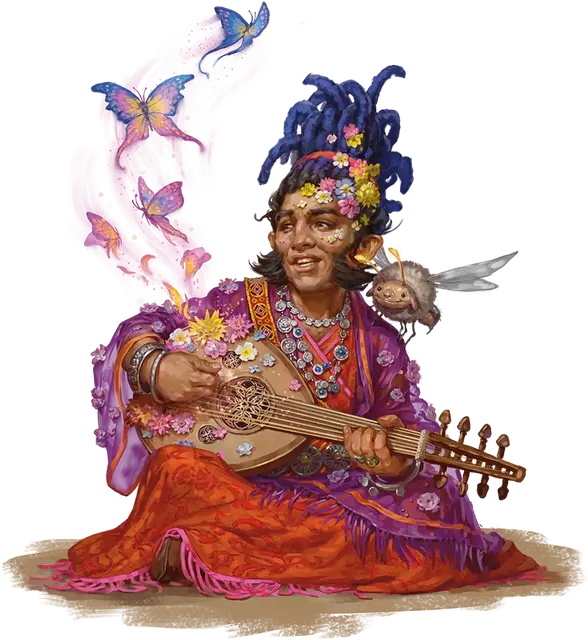

Муза Общества восприятия
Society of Sensation Muse
Маленький или Средний Гуманоид

Класс Доспеха 14 (кожаный доспех)
Хиты 44 (8к8 + 8)
Скорость 30 футов
| мод | спас | ||
|---|---|---|---|
| СИЛ | 8 | −1 | −1 |
| ЛОВ | 16 | +3 | +5 |
| ТЕЛ | 12 | +1 | +1 |
| мод | спас | ||
|---|---|---|---|
| ИНТ | 15 | +2 | +2 |
| МДР | 14 | +2 | +2 |
| ХАР | 17 | +3 | +5 |
Навыки Восприятие +4, Выступление +7, Проницательность +4, Скрытность +5
Чувства пассивное Восприятие 14
Языки Общий плюс два языка
Опасность 3 (700 опыта)
Бонус мастерства +2
Действия
Мультиатака. Муза совершает две атаки Обманчивым резонансом.
Обманчивый резонанс. . Рукопашная или Дальнобойная атака заклинанием: +5 к попаданию, досягаемость 5 футов или дистанция 90 футов, одна цель. Попадание: 9 (2к8) урона психической энергией. Если целью является существо, она должна преуспеть в спасброске Харизмы Сл 13, иначе будет с помехой совершать следующий бросок атаки, совершаемый, до конца своего следующего хода.
Использование заклинаний. Муза накладывает одно из следующих заклинаний, не нуждаясь в материальных компонентах, используя Харизму в качестве базовой характеристики (Сл спасброска заклинания 13):
• Неограниченно: пляшущие огоньки [dancing lights]
• 1/день каждое: понимание языков [comprehend languages], гипнотический узор [hypnotic pattern]
Бонусные действия
Чарующее присутствие. Каждое существо в пределах 30 футов от музы должно совершить спасбросок Мудрости Сл 13. При провале существо становится очарованным на 1 минуту. При успехе существо становится невосприимчивым к Чарующему присутствию любой музы на 24 часа.
Всякий раз, когда муза наносит урон очарованному существу, оно может совершить повторный спасбросок, оканчивая на себе действие эффекта в случае успеха.
Описание
Музы Общества восприятия - это исполнительницы, очаровывающие толпы зрелищами и мелкими сенсорными ощущениями. Когда им угрожают, они вводят в заблуждение своих врагов, умиротворяя их магическими зрелищами.